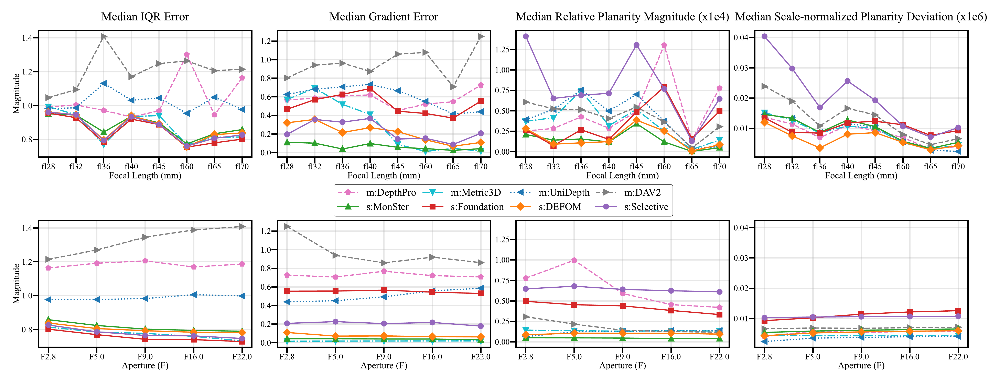

Visualizations & Results
Dataset Overview

Click image to view in full resolution
Depth Estimation Results
Aperture Analysis

Analysis of different aperture values and their impact on depth of field
Bokeh & Defocus Blur Analysis
Deblurring Results
Visual Illusions
-1.png)
Image 2
Challenging visual illusions included in the dataset to test algorithm robustness
3D Scene Reconstruction - COLMAP & OpenMVS

Image 3
3D Gaussian Splatting

Image 1

Image 2

Image 3
Novel view synthesis using 3D Gaussian Splatting on MODEST dataset